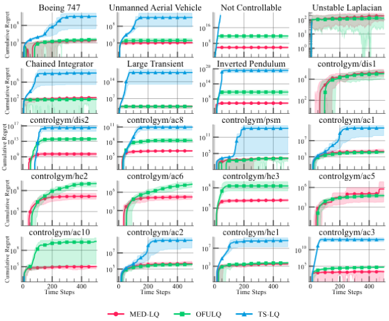

RECAP & PERSPECTIVE
Odalric-Ambrym Maillard
HORIBA
July 09, 2025

Road map
- What we have seen
- Take home messages
What we have seen
- From tabular to parametric representations
- Linear and non linear representations
- Critic strategies, Actor strategies.
- Challenges of approximation
- Policy gradient theorem
- DQN, PPO, etc
- Caveats of Deep learning
- Exploration bonus
Take home messages ?
Bandit-inspired strategies for Large dynamical systems?
MED-LQ: Minimum empirical divergence for linear quadratic systems.
We apply a bandit principle "confusing instance search" to linear quadratic systems.
